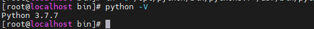
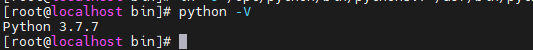

1. 编译安装
centos7 python默认为2.7
1 | yum install -y gcc gcc-c++ texinfo zlib* make |

99. FAQ
99.1 解决系统安装python3后，yum无法运行
1 | sed -i 's|#!/usr/bin/python|#!/usr/bin/python2|g' /usr/bin/yum |
centos7 python默认为2.7
1 | yum install -y gcc gcc-c++ texinfo zlib* make |

1 | sed -i 's|#!/usr/bin/python|#!/usr/bin/python2|g' /usr/bin/yum |
- 版权声明： 本博客所有文章除特别声明外，均采用 CC BY 4.0 CN协议 许可协议。转载请注明出处！